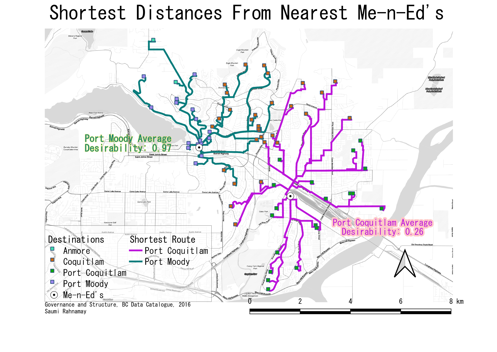

Optimizing Desirability
Preface
Part two of an ongoing project where I analyze data surrounding my part time job as a pizza delivery driver. Part two focuses on geographic data. It was originally submitted as an assignment for GEOG 255 at Simon Fraser University.
Section I. Research Question and Theory
Based on the success the first part of this project had, I decided to extend the scope of this project to include geographic questions. The research circumstances being studied are explained in part one. An important bit of exposition required is that while Me-n-Ed’s is located in Port Coquitlam, it isn’t limited to delivering to that municipality. Additionally, we deliver to 3 neighbouring municipalities for a total of 4: Coquitlam, Port Coquitlam, Port Moody and Anmore. An important part of making sure I’m getting the most tip money on a given shift is to not waste time on the road; the faster I get back to the restaurant, the more deliveries I take and the more tip money I make. Deliveries to closer addresses are preferable for this reason; less time spent in transit. The ideal delivery will therefore be high-tipping, and nearby. One could represent the desirability of a delivery as a ratio of its tip over it’s distance from the restaurant. If that’s the case, my question is which municipality will be on average the most desirable to deliver to? To answer this question, I intend on producing a map visualizing the shortest routes[^1] to a set of delivery addresses. This involves network analysis based on the location of Me-n-Ed’s and the local road network. Furthermore, I will generate a choropleth layer representing the desirability of each municipality.
Furthermore, I have an additional speculative inquiry. In the past month or so, management has been gossiping about the possibility of opening another Me-n-Ed’s right in the center of Port Moody. In this hypothetical scenario, deliveries closest to the Port Moody location will be taken by the Port Moody location, instead of the Port Coquitlam location. Because Port Moody is pretty close to where I live, I could ask to be transferred to the Port Moody branch and work there instead if I wanted to. In the interest of maximizing my income from this job, which location would be the most desirable to work at? To see if switching to the speculative Port Moody location would be a good idea, I’ll recalculate the shortest distance from each delivery in my dataset, this time to the closest Me-n-Ed’s. This will require me to recalculate the desirability of each delivery. By comparing the respective average desirability of both locations’ deliveries, I’ll be able to determine which will be the most desirable. # Section II. Datasets and Data Acquisition My main dataset is the same one I gathered and used in part one. My data includes Date, Tip Amount, Address, Municipality, Desirability, Location of the restaurant in Port Coquitlam and the Potential location of the restaurant in Port Moody. The potential location of the Port Moody location is speculatively assumed to be in downtown Port Moody, which is not unrealistic. Desirability was calculated via a simple SQL expression: \((tip/distance)*100\). Road network data and municipality boundaries was accessed via BC Data Catalogue (CRF = NAD83). Road network data was trimmed to fit area of interest. # Section III. Shortest Manhattan distances and Desirability
 Based on my analysis, I’ve generated a choropleth map visualizing the shortest distance from each delivery to Port Coquitlam location and the average desirability of each municipality. We can see that the most desirable municipalities are Port Coquitlam, Coquitlam, Port Moody, and Anmore in that order.
Based on my analysis, I’ve generated a choropleth map visualizing the shortest distance from each delivery to Port Coquitlam location and the average desirability of each municipality. We can see that the most desirable municipalities are Port Coquitlam, Coquitlam, Port Moody, and Anmore in that order.
 When we take the average desirability of every delivery taken by either respective location, we can see that Port Moody > Port Coquitlam. According to this summary, I’ve produced a map showing the shortest route from each restaurant to the nearest Me-n-Ed’s.
Section IV. Conclusion
I can conclude from my research that Port Coquitlam is the most desirable municipality to deliver to when working at the Port Coquitlam location. However, overall, the hypothetical Porty Moody location is the more desirable of the two locations.
[^1]: Luckily, the fastest route will almost always also be the shortest route, because there are no one-ways, substantial shortcuts and only one highway. This makes things much simpler. Of course construction, road closures, vehicle collisions and traffic might make the expected routes take longer, or simply make them impossible to take, but these are rare and unpredictable enough to deal with on a case by case basis.